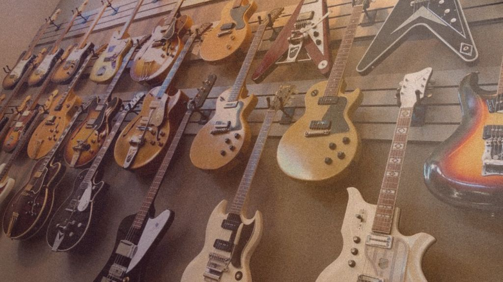

From Garage to Studio: Best Budget-Friendly Guitars for Musicians

Yamaha Pacifica Series: Affordable Excellence
The Yamaha Pacifica Series has long been revered as a go-to choice for budget-conscious musicians seeking quality craftsmanship and versatile tones. Whether you're a beginner or a seasoned player, models like the Yamaha Pacifica 112V offer superb playability, impressive build quality, and a range of tones that make them a solid choice for any genre.
Squier Classic Vibe Series: Vintage Vibe, Budget Price
Squier, Fender's more budget-friendly sibling, delivers exceptional value with its Classic Vibe series. These guitars are known for capturing the essence of vintage Fender designs without the hefty price tag. The Squier Classic Vibe '50s and '60s Stratocaster and Telecaster models offer timeless aesthetics, excellent build quality, and tones that rival guitars well above their price range.
Epiphone Les Paul Standard: Affordable Rock Icon
The Epiphone Les Paul Standard stands as a testament to the enduring popularity of the iconic Les Paul design. Known for its rich, warm tones and solid build, the Epiphone Les Paul Standard is an excellent choice for rock, blues, and beyond. It provides that classic Les Paul feel and sound without draining your studio budget.
Ibanez RG Series: Shredding on a Shoestring
For those venturing into the realms of rock and metal, the Ibanez RG Series is a budget-friendly gateway to sonic mayhem. These guitars are celebrated for their sleek, ergonomic designs, fast-playing necks, and high-output pickups that cater to the needs of shredders and heavy riff enthusiasts. The Ibanez RG421 and RG550 models are particularly noteworthy for their performance at an affordable price.
Gretsch G2622 Streamliner: Vintage Vibes, Modern Affordability
If you crave the distinctive sounds of the rockabilly era and beyond, the Gretsch G2622 Streamliner provides vintage aesthetics and quality at a reasonable price. Known for its hollow-body resonance and iconic Bigsby tremolo, the G2622 is a versatile choice for those seeking a unique sonic palette without breaking the bank.
PRS SE Series: Elegance Meets Affordability
The PRS SE Series brings the renowned craftsmanship of Paul Reed Smith guitars within reach of budget-conscious musicians. The PRS SE Standard 24 and SE Custom 24 models offer impressive build quality, versatile tones, and a comfortable playing experience. These guitars bridge the gap between affordability and professional-grade performance.
Whether you're strumming, picking, or shredding, these instruments prove that you don't need to sacrifice quality for the sake of your studio budget. Let the music flow and the creativity flourish with the perfect budget-friendly guitar by your side.
This dispatch was last updated on January 22, 2024